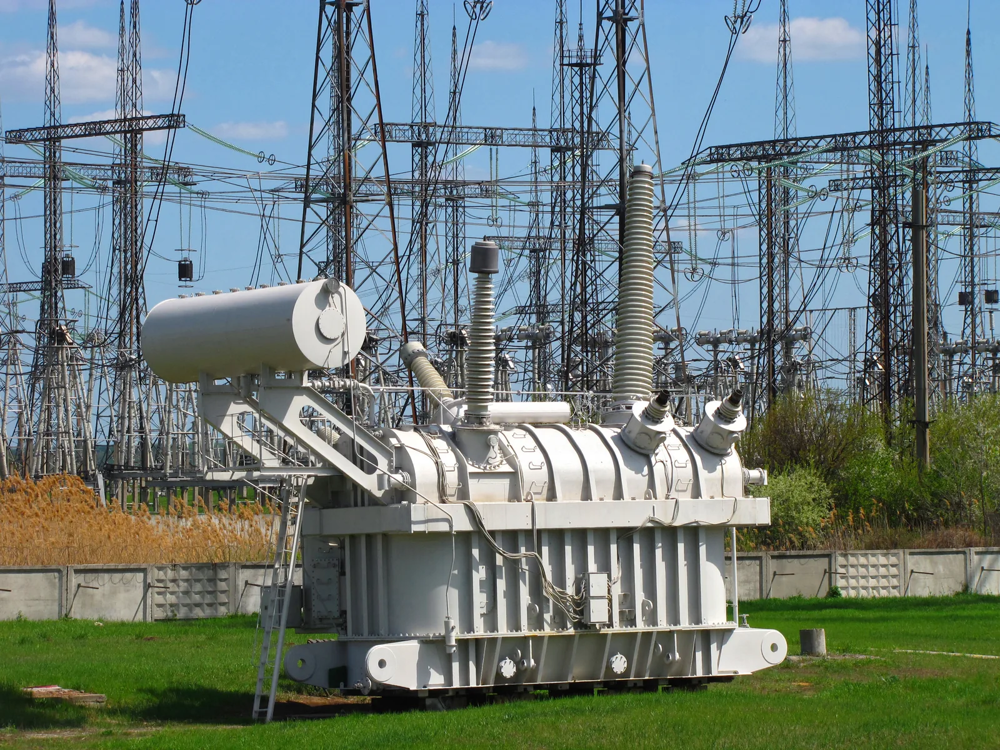

Muuntaja ja sähköenergian siirto
Miksi sähkö kuljetetaan voimalaitokselta kaupunkiin $400\,\text{kV}$:n jännitteellä, vaikka kodin pistorasiassa jännite on vain $230\,\text{V}$?
Pohjatiedot
- Muuttuva magneettivuo indusoi käämiin jännitteenluku Sähkömagneettinen induktio
- Generaattori tuottaa vaihtojännitettä, ja verkkojännitteen tehollinen arvo on $230\,\text{V}$luku Generaattori ja vaihtovirta
Luvun tärkeät käsitteet Vapaaehtoinen
Tutustu luvun tärkeisiin käsitteisiin. Voit kirjoittaa niiden merkitykset sinulle vahvimmalla kielellä tai useammalla kielellä.
- Muuntaja
- Laite, joka nostaa tai laskee vaihtojännitettä. Siinä on kaksi käämiä yhteisen rautasydämen ympärillä.
- Muuntosuhde
- Ensiö- ja toisiokäämin kierroslukujen suhde $N_1 : N_2$. Ihanteellisessa muuntajassa se on sama kuin jännitteiden suhde $U_1 : U_2$.
- Siirtohäviö
- Teho, joka muuttuu johdoissa sisäenergiaksi, kun sähköä siirretään. Samassa johdossa se kasvaa virran neliön mukana.
- Suurjännite
- Hyvin suuri jännite, jolla sähköä siirretään kantaverkossa. Kun siirretty teho on sama, virta on silloin pieni ja häviöt pienet.
Pohdinta
Voimalaitoksen generaattori tuottaa noin $20\,\text{kV}$:n jännitteen. Kotien pistorasioissa jännite on $230\,\text{V}$. Välissä sähkö kulkee satoja kilometrejä kantaverkon johtoja pitkin, ja niissä jännite on jopa $400\,\text{kV}$. Jännite siis ensin nostetaan valtavasti ja lasketaan sitten vaiheittain. Se vaatii kalliita muuntajia ja korkeita pylväitä.
Miksi sähköä ei siirretä suoraan generaattorin jännitteellä? Miten jännitettä ylipäätään voi muuttaa?
Valinnainen Kertaa: induktio
Ennusta
Ennuste 1: muuntaja ja akku
Lisää ennusteita 1 kysymys
Ennuste 2: kaksinkertainen jännite
Tutki
Simulaatio
Käyttöohje
Säädä siirtojännitettä $U$, siirrettävää tehoa $P$ ja johdon pituutta $l$. Kuvassa vasemmalla on voimalaitos ja sen nostomuuntaja. Keskellä on voimajohto. Oikealla on laskumuuntaja ja kaupunki. Johto muuttuu sitä punaisemmaksi, mitä suurempi osa tehosta muuttuu siinä lämmöksi. Palkit kuvan alla näyttävät perille tulevan tehon (vihreä) ja häviötehon (oranssi) samassa mittakaavassa. Lukemat-riviltä näet johdon virran, resistanssin ja nostomuuntajan muuntosuhteen.
Mallin oletukset
Malli käsittelee siirron yksinkertaistettuna kahden johtimen siirtona. Voimalaitos lähettää tehon $P$ jännitteellä $U$. Johtimien yhteinen resistanssi on $R = 0{,}040\,\tfrac{\Omega}{\text{km}} \cdot l$. Todellinen kantaverkko on kolmivaiheinen, mutta häviön riippuvuus virrasta on sama. Generaattorin jännite on aina $20\,\text{kV}$, ja muuntajat oletetaan ideaalisiksi. Jos häviöteho olisi suurempi kuin lähetetty teho, siirto ei onnistu, ja malli ilmoittaa sen. Lukemat ovat mallin laskemia arvoja, eivät mittauksia.
Laskennan selitys
Johdon virta saadaan tehosta ja siirtojännitteestä, $I = P : U$. Johdossa lämmöksi muuttuva teho on
$$P_\text{h} = R I^2$$
Perille tulee teho $P_\text{perille} = P - P_\text{h}$. Häviön osuus on $P_\text{h} : P$. Nostomuuntajan muuntosuhde on $N_2 : N_1 = U : 20\,\text{kV}$.
Voimalaitos lähettää tehon kaupunkiin voimajohtoa pitkin. Valitse siirtojännite, teho ja johdon pituus. Seuraa, kuinka suuri osa tehosta muuttuu johdossa lämmöksi.
Koe 1: vain siirtojännite muuttuu
Testaa ennuste 2. Teho on $200\,\text{MW}$ ja johdon pituus $150\,\text{km}$. Muuta vain siirtojännitettä. Kirjaa ainakin jännitteet $100\,\text{kV}$, $200\,\text{kV}$ ja $400\,\text{kV}$. Halutessasi kirjaa myös $50\,\text{kV}$. Vertaa, miten virta ja häviöteho muuttuvat, kun jännite kaksinkertaistuu.
- Alkutila
- siirtojännite = $100\,\text{kV}$, teho = $200\,\text{MW}$, johdon pituus = $150\,\text{km}$
- Vakiona
- teho, johdon pituus
- Muutetaan
- siirtojännite
| siirtojännite | $I$ $(\text{A})$ | $P_h$ $(\text{MW})$ | osuus $(\%)$ |
|---|
Lisää tutkittavaa 1 tehtävä
Johtopäätös: häviö ja jännite
Kirjoita taulukkosi perusteella: miten johdon virta ja häviöteho muuttuvat, kun siirtojännite kaksinkertaistuu? Mikä riippuvuus häviötehon ja jännitteen välillä on? Mitä tämä merkitsee voimalaitokselle, joka haluaa siirtää sähköä kauas?
Mallivastaus
Jännite kaksinkertaistuu $100\,\text{kV}$:sta $200\,\text{kV}$:iin. Silloin virta puolittuu $2000\,\text{A}$:sta $1000\,\text{A}$:iin. Häviöteho pienenee $24\,\text{MW}$:sta $6{,}0\,\text{MW}$:iin, eli neljäsosaan. Jännitteellä $400\,\text{kV}$ virta on $500\,\text{A}$ ja häviö $1{,}5\,\text{MW}$, vain $0{,}75\,\%$ tehosta. Virta on kääntäen verrannollinen jännitteeseen, $I = P : U$. Häviö on verrannollinen virran neliöön, $P_\text{h} = R I^2$. Siksi häviö on kääntäen verrannollinen jännitteen neliöön. Generaattorin jännite kannattaa siis nostaa muuntajalla suurjännitteeksi ennen siirtoa ja laskea perillä. Arvot ovat mallin laskemia.
Arvioi oma vastauksesi
Merkitse kohdat, jotka sinun vastauksessasi jo on.
Kertaa asia teoriasta ja harjoittele tehtävillä.
Teoria
Ydinajatus
Muuntaja muuttaa vaihtojännitettä
Muuntajassa on suljettu rautasydän. Sen ympärille on kierretty kaksi käämiä. Käämi on lankakela. Ensiökäämiin kytketään vaihtojännite. Toisiokäämistä saadaan jännite laitteelle. Käämit eivät kosketa toisiaan. Niiden välillä ei kulje virtaa johtimia pitkin.
Ensiökäämin vaihtovirta synnyttää rautasydämeen magneettikentän. Kentän suuruus ja suunta vaihtelevat virran tahdissa. Rautasydän ohjaa lähes koko magneettivuon kiertämään sydäntä pitkin. Vuo kulkee siis myös toisiokäämin läpi. Luvussa Sähkömagneettinen induktio nähtiin, että muuttuva magneettivuo indusoi käämiin jännitteen. Siksi toisiokäämiin syntyy vaihtojännite. Sen taajuus on sama kuin ensiöjännitteen.
Kierrosten lukumäärä määrää jännitteen
Sama muuttuva magneettivuo kulkee kummankin käämin jokaisen kierroksen läpi. Siksi jokaiseen kierrokseen indusoituu yhtä suuri jännite. Käämin jännite on sen kierrosten jännitteiden summa. Jännite on siis verrannollinen kierrosten lukumäärään.
Ideaalisessa muuntajassa ensiöjännitteen ja toisiojännitteen suhde on sama kuin käämien kierrosten lukumäärien suhde. Tätä suhdetta sanotaan muuntosuhteeksi. Jos toisiokäämissä on enemmän kierroksia kuin ensiökäämissä, muuntaja nostaa jännitettä. Jos toisiokäämissä on vähemmän kierroksia, muuntaja laskee jännitettä.
Muuntaja tarvitsee muuttuvan magneettivuon
Toisiokäämiin syntyy jännite vain, kun sen läpi kulkeva magneettivuo muuttuu. Oletetaan, että ensiökäämi kytketään akkuun. Silloin käämissä kulkee vakiosuuruinen tasavirta, ja rautasydämen magneettikenttä on vakio. Vakiosuuruinen magneettivuo ei indusoi jännitettä. Toisiokäämin jännite on siis nolla. Jännitepulssi syntyy vain hetkellä, jolloin virta kytketään tai katkaistaan, koska silloin vuo muuttuu.
Tämän vuoksi sähköverkossa käytetään vaihtovirtaa. Luvussa Generaattori ja vaihtovirta generaattori tuottaa vaihtojännitettä. Muuntajilla jännite voidaan muuttaa aina sopivan suuruiseksi.
Teho säilyy, virta muuttuu
Ideaalinen muuntaja ei kuluta energiaa. Siksi ensiökäämiin tuleva teho on yhtä suuri kuin toisiokäämistä lähtevä teho. Kun kuorma on resistiivinen, teho on jännitteen ja virran tulo. Kun muuntaja nostaa jännitteen kymmenkertaiseksi, virta pienenee kymmenesosaan.
Muuntaja ei siis lisää energiaa eikä tehoa. Se vaihtaa suuren virran suureksi jännitteeksi tai päinvastoin. Todellisessa muuntajassa osa energiasta muuttuu sisäenergiaksi käämien resistanssissa ja rautasydämen pyörrevirroissa. Siksi sydän kootaan ohuista levyistä, jotka on eristetty toisistaan (luku Lenzin laki ja pyörrevirrat). Suurten voimalaitosmuuntajien hyötysuhde on yli $99\,\%$.
Siirtohäviö ja suurjännite
Voimajohdolla on resistanssi. Johdossa kulkeva virta lämmittää johtoa. Lämmöksi muuttuva teho on verrannollinen virran neliöön. Siksi virta kannattaa pitää pienenä.
Saman tehon voi siirtää suurella jännitteellä ja pienellä virralla. Kun jännite nostetaan kymmenkertaiseksi, virta pienenee kymmenesosaan ja häviöteho sadasosaan. Siksi voimalaitoksen generaattorin jännite nostetaan muuntajalla suurjännitteeksi. Fingrid ylläpitää Suomen kantaverkkoa. Kantaverkon jännitteet ovat $400\,\text{kV}$, $220\,\text{kV}$ ja $110\,\text{kV}$. Kantaverkon häviöt vastaavat noin $2\,\%$:a Suomessa käytetystä sähköstä (Fingrid, Yhteisillä linjoilla 2026, vuoden 2025 tiedot).

Jännite lasketaan vaiheittain
Sähköasemilla muuntajat laskevat jännitteen alueverkon $110\,\text{kV}$:iin ja jakeluverkon $20\,\text{kV}$:iin. Asuinalueen muuntamossa on jakelumuuntaja. Se laskee esimerkiksi $20\,\text{kV}$:n jännitteen pienjänniteverkon jännitteeksi. Pienjänniteverkossa vaihejohtimien välillä on noin $400\,\text{V}$. Vaihejohtimen ja nollajohtimen välillä on noin $230\,\text{V}$. Se on kodin pistorasian jännite. Suurjännitettä ei tuoda koteihin. Sen eristäminen vaatii pitkiä eristimiä ja suuria etäisyyksiä, ja kosketus olisi hengenvaarallinen (luku Sähköturvallisuus kotona ja työssä).
Puhelimen laturi laskee jännitteen vielä noin $5\,\text{V}$:iin. Nykyaikainen laturi muuttaa verkkojännitteen ensin hyvin suuritaajuiseksi. Silloin muuntaja voi olla pieni. Lopuksi laturi tasasuuntaa jännitteen. Laturin muuntajan käämit eivät kosketa toisiaan. Puhelin ei siis ole johtavassa yhteydessä sähköverkkoon.
Muuntaja ja siirtohäviö
Ideaalisen muuntajan jännitteet ja virrat riippuvat käämien kierrosten lukumääristä:
- muuntaja
- $$\frac{U_1}{U_2} = \frac{N_1}{N_2} = \frac{I_2}{I_1}$$
Tässä $U_1$ on ensiöjännite (V) ja $U_2$ on toisiojännite (V). Kirjaimet $N_1$ ja $N_2$ ovat ensiökäämin ja toisiokäämin kierrosten lukumäärät. Kirjaimet $I_1$ ja $I_2$ ovat ensiövirta ja toisiovirta (A). Suhde $N_1 : N_2$ on muuntosuhde. Viimeinen yhtäsuuruus seuraa tehon säilymisestä: $U_1 I_1 = U_2 I_2$. Jännitteet ja virrat ovat tehollisia arvoja (luku Generaattori ja vaihtovirta). Kun jännite kasvaa, virta pienenee samassa suhteessa.
Siirtojohdon tehohäviö
Sähkönsiirtoa kuvataan ensin yksinkertaistetulla kaksijohtimisella virtapiirillä. Siinä virta kulkee perille yhtä johdinta pitkin ja palaa toista pitkin. Voimalaitos lähettää tehon $P$ jännitteellä $U$. Johdon virta ja johdossa lämmöksi muuttuva teho ovat
- tehonkulutus johtimessa
- $$P = U I$$
- $$P_\text{h} = R I^2 = \frac{R P^2}{U^2}$$
Tässä $P$ on siirrettävä teho (W), $U$ on siirtojännite (V) ja $I$ on johdon virta (A). Kirjain $R$ on kummankin johtimen yhteenlaskettu resistanssi (Ω) ja $P_\text{h}$ on häviöteho (W). Kun sama teho siirretään kaksinkertaisella jännitteellä, virta puolittuu ja häviöteho pienenee neljäsosaan.
Siirtojännite $U$ ei ole sama kuin jännite johdon resistanssin yli. Johdon päiden välinen jännitehäviö on vain $R I$. Siksi häviötehoa ei saa laskea lausekkeella $U^2 : R$.
Todellinen kantaverkko on kolmivaiheinen
Suomen todellinen kantaverkko on kolmivaiheinen. Johdolla on kolme vaihejohdinta. Esimerkiksi $400\,\text{kV}$ on vaihejohtimien välinen jännite. Sitä sanotaan pääjännitteeksi. Kun kolmivaiheverkko on tasaisesti kuormitettu, sen pätöteho on
$$P = \sqrt{3}\,U I \cos\varphi$$
Tässä $P$ on siirrettävä pätöteho (W), $U$ on pääjännite (V) ja $I$ on vaihejohtimen virta (A). Merkintä $\cos\varphi$ on tehokerroin. Tehokerroin on yksi, kun virta ja jännite ovat samassa vaiheessa.
Samalla jännitteellä, virralla ja tehokertoimella kolmivaihejohto siirtää noin $1{,}73$-kertaisen tehon kaksijohtimiseen malliin verrattuna. Periaate on silti sama: suuri siirtojännite pienentää virtaa ja häviöitä. Tämän luvun laskutehtävissä käytetään tarkoituksella yksinkertaistettua kaksijohtimista mallia $P = UI$, ellei tehtävässä sanota muuta.
Yleinen virhekäsitys
Moni laskee voimajohdon häviötehon lausekkeella $P = U^2 : R$. Sen jälkeen hän päättelee, että suurempi jännite lisää häviöitä. Lausekkeessa $U$ on kuitenkin vastuksen yli oleva jännite. Siirtojännite on johtimien ja maan tai johtimien keskinäinen jännite. Johdon resistanssin yli on vain pieni jännitehäviö $R I$.
Oikea tapa on laskea ensin virta $I = P : U$ ja sitten häviöteho $P_\text{h} = R I^2$. Suurempi jännite pienentää virtaa ja häviöitä.
Toinen virhe on ajatella, että jännitettä nostava muuntaja lisää tehoa. Ideaalisessa muuntajassa teho säilyy. Kun jännite kasvaa, virta pienenee. Kolmas virhe on olettaa, että muuntaja toimii myös akulla. Muuntaja tarvitsee muuttuvan magneettivuon, eli vaihtovirran.
Tiivistelmä
- Muuntajassa ensiökäämin vaihtovirta synnyttää rautasydämeen muuttuvan magneettivuon. Vuo indusoi toisiokäämiin vaihtojännitteen. Tasavirralla vuo ei muutu, eikä muuntaja toimi.
- Ideaalisessa muuntajassa $U_1 : U_2 = N_1 : N_2 = I_2 : I_1$. Teho säilyy, joten jännitteen kasvaessa virta pienenee.
- Siirtojohdon häviöteho on $P_\text{h} = R I^2$, missä $I = P : U$. Kaksinkertainen siirtojännite pienentää häviöt neljäsosaan.
- Sähkö siirretään pitkiä matkoja suurjännitteellä. Suomen kantaverkon jännitteet ovat $400\,\text{kV}$, $220\,\text{kV}$ ja $110\,\text{kV}$. Muuntajat laskevat jännitteen vaiheittain pienjänniteverkon $400\,\text{V}$:iin ja $230\,\text{V}$:iin.
- Laskuissa käytetään yksinkertaistettua kaksijohtimista mallia $P = UI$. Todellinen kantaverkko on kolmivaiheinen: $400\,\text{kV}$ on pääjännite, ja pätöteho on $P = \sqrt{3}\,U I \cos\varphi$.
Valinnainen Palaa ennusteisiisi
Vertaa ennusteitasi teoriaan ja kokeen mallin arvoihin. Palaa sitten alun kysymykseen. Miksi sähköä ei siirretä generaattorin $20\,\text{kV}$:n jännitteellä? Miksi jännitteen muuttaminen vaatii vaihtovirtaa?
Haluaisitko muuttaa ennustettasi?
Esimerkit
Esimerkki 1: Sähköaseman muuntaja
Sähköaseman muuntaja laskee alueverkon jännitteen $110\,\text{kV}$ jakeluverkon jännitteeksi $20\,\text{kV}$. Toisiokäämissä on $360$ kierrosta, ja jakeluverkkoon lähtevä virta on $450\,\text{A}$. Kuinka monta kierrosta ensiökäämissä on? Kuinka suuri virta ensiökäämissä kulkee? Muuntaja oletetaan ideaaliseksi.
Vaihe 1/7
Tunnetut ja kysytty. Ensiöjännite on $U_1 = 110\,\text{kV}$ ja toisiojännite $U_2 = 20\,\text{kV}$. Toisiokäämin kierrosten lukumäärä on $N_2 = 360$ ja toisiovirta $I_2 = 450\,\text{A}$. Kysytään ensiökäämin kierrosten lukumäärää $N_1$ ja ensiövirtaa $I_1$.
Vaihe 2/7
Periaate. Ideaalisessa muuntajassa sama muuttuva magneettivuo kulkee kummankin käämin läpi. Siksi jännitteet suhtautuvat kuten kierrosten lukumäärät. Muuntaja ei kuluta energiaa, joten teho säilyy, $U_1 I_1 = U_2 I_2$. Virrat suhtautuvat siis kääntäen kuten jännitteet.
Vaihe 3/7
Kaava ratkaistuna. $$\begin{aligned} \frac{U_1}{U_2} &= \frac{N_1}{N_2} \;\Rightarrow\; N_1 = \frac{N_2 U_1}{U_2} \\[6pt] \frac{U_1}{U_2} &= \frac{I_2}{I_1} \;\Rightarrow\; I_1 = \frac{I_2 U_2}{U_1} \end{aligned}$$
Vaihe 4/7
Yksikkömuunnokset. Niitä ei tarvita. Jännitteet ovat kummassakin kaavassa osamääränä, joten kilovoltit supistuvat. Kumpikin jännite on samassa yksikössä, $\text{kV}$.
Vaihe 5/7
Sijoitus. $$\begin{aligned} N_1 &= \frac{N_2 U_1}{U_2} \\ &= \frac{360 \cdot 110\,\text{kV}}{20\,\text{kV}} \\ &= 1980 \\[6pt] I_1 &= \frac{I_2 U_2}{U_1} \\ &= \frac{450\,\text{A} \cdot 20\,\text{kV}}{110\,\text{kV}} \\ &= 81{,}82\,\text{A} \end{aligned}$$
Vaihe 6/7
Tulos. Ensiökäämissä on $1980$ kierrosta. Ensiövirta on $I_1 \approx 82\,\text{A}$. Virta ilmoitetaan kahdella merkitsevällä numerolla, kuten jännite $20\,\text{kV}$.
Vaihe 7/7
Järkevyys. Muuntaja laskee jännitettä. Siksi ensiökäämissä on oltava enemmän kierroksia ja pienempi virta kuin toisiokäämissä. Tulos on tällainen. Teho säilyy: $110\,\text{kV} \cdot 81{,}82\,\text{A} = 9{,}0\,\text{MW}$ ja $20\,\text{kV} \cdot 450\,\text{A} = 9{,}0\,\text{MW}$.
Valinnainen Esimerkki 2: Etsi virhe
Esimerkki 3: Sovella uuteen tilanteeseen: tuulipuiston liityntäjohto
Tuulipuisto syöttää tehon $33\,\text{MW}$ sähköasemalle $110\,\text{kV}$:n voimajohtoa pitkin. Johtimien yhteinen resistanssi on $8{,}0\,\Omega$. Siirtoa kuvataan yksinkertaistetulla kaksijohtimisella mallilla. Kuinka suuri teho johdossa muuttuu lämmöksi? Vastaa kilowatteina.
Vihje 1: ohjaava kysymys
Johtoa lämmittää virta. Miten virta saadaan, kun teho ja siirtojännite tunnetaan?
Vihje 2: mikä yhteys
Virta on $I = P : U$, ja häviöteho $P_\text{h} = R I^2$.
Vihje 3: välivaihe
joten $P_\text{h} = 8{,}0\,\Omega \cdot (300\,\text{A})^2$.
Näytä ratkaisu
Annettu
teho $P = 33\,\text{MW}$, siirtojännite $U = 110\,\text{kV}$, johtimien resistanssi $R = 8{,}0\,\Omega$
Kysytty
johdossa lämmöksi muuttuva teho $P_\text{h}$ kilowatteina
Periaate
Johdon resistanssissa virta muuttaa sähköenergiaa sisäenergiaksi. Teho on $P_\text{h} = R I^2$. Virta saadaan siirrettävästä tehosta ja siirtojännitteestä, koska $P = U I$. Siirtojännite ei ole jännite johdon resistanssin yli. Siksi lauseketta $U^2 : R$ ei voi käyttää.
Kaava
$P = U I$, josta $I = \dfrac{P}{U}$, ja $P_\text{h} = R I^2$
Muunnokset
Lopuksi $1\,\text{kW} = 1000\,\text{W}$.
Sijoitus
Vastaus
$720\,\text{kW}$
Eli $7{,}2 \cdot 10^{2}\,\text{kW}$. Vastauksessa on kaksi merkitsevää numeroa, kuten tehossa $33\,\text{MW}$ ja resistanssissa $8{,}0\,\Omega$.
Järkevyys
Häviö on $720\,\text{kW} : 33\,000\,\text{kW} \approx 2{,}2\,\%$ siirrettävästä tehosta. Se on samaa suuruusluokkaa kuin Fingridin ilmoittama kantaverkon häviöosuus, noin $2\,\%$. Häviö on pieni osa tehosta, kuten toimivassa verkossa pitääkin.
Kertaa luvun käsitteet
Jos valitset Kertaa myöhemmin, kortti menee kertauspakkaasi.
- Muuntaja
- Laite, joka muuttaa vaihtojännitteen suuruutta käämien kierroslukujen suhteessa.
Tehtävät
Tämän oppitunnin tehtäviä ei ole vielä tarkistettu. Ne tulevat tähän, kun ne on tarkistettu.
Testaa ja arvioi
1. Pohdintatehtävä
Vastaa ensin itse. Avaa vastaus vasta sitten.
- Muuntajan ensiökäämissä on $500$ kierrosta ja toisiokäämissä $25$ kierrosta. Ensiöjännite on $230\,\text{V}$. Kuinka suuri on toisiojännite?
Vastaus
$U_2$$= U_1 N_2 : N_1$$= 230\,\text{V} \cdot 25 : 500$$= 11{,}5\,\text{V}$Toisiokäämissä on vähemmän kierroksia, joten muuntaja laskee jännitettä.
- Siirtojohdon virta pienenee kolmasosaan. Johdon resistanssi pysyy samana. Miten johdossa lämmöksi muuttuva teho muuttuu?
Vastaus
Se pienenee yhdeksäsosaan, koska $P_\text{h} = R I^2$ ja $(1 : 3)^2 = 1 : 9$.
2. Käsitetehtävä: Miksi suurjännite
3. Laskutehtävä: Laske: valaisinmuuntaja
Pienjännitevalaisimen ideaalinen muuntaja laskee verkkojännitteen $230\,\text{V}$ jännitteeksi $12\,\text{V}$. Toisiokäämiin kytkettyjen lamppujen yhteinen teho on $60\,\text{W}$. Kuinka suuri virta kulkee ensiökäämissä? Vastaa ampeereina.
Vihje 1: ohjaava kysymys
Ideaalinen muuntaja ei kuluta energiaa. Mikä on siis ensiökäämiin tuleva teho?
Vihje 2: mikä yhteys
Ensiöteho on $60\,\text{W}$, ja $P = U_1 I_1$.
Vihje 3: välivaihe
$I_1 = 60\,\text{W} : 230\,\text{V}$.
Näytä ratkaisu
Annettu
ensiöjännite $U_1 = 230\,\text{V}$, toisiojännite $U_2 = 12\,\text{V}$, lamppujen teho $P = 60\,\text{W}$, ideaalinen muuntaja
Kysytty
ensiövirta $I_1$ ampeereina
Periaate
Ideaalinen muuntaja ei kuluta energiaa. Siksi ensiökäämiin tuleva teho on sama kuin toisiokäämistä lamppuihin lähtevä teho, $U_1 I_1 = U_2 I_2 = P$.
Kaava
$P = U_1 I_1$, josta $I_1 = \dfrac{P}{U_1}$
Muunnokset
Niitä ei tarvita. Teho on watteina ja jännite voltteina, ja $\tfrac{\text{W}}{\text{V}} = \text{A}$.
Sijoitus
Vastaus
$0{,}26\,\text{A}$
Vastauksessa on kaksi merkitsevää numeroa, kuten tehossa $60\,\text{W}$.
Järkevyys
Toisiovirta on $60\,\text{W} : 12\,\text{V} = 5{,}0\,\text{A}$. Jännitettä laskevan muuntajan ensiövirran on oltava pienempi. Suhde $5{,}0\,\text{A} : 0{,}26\,\text{A} \approx 19$ on sama kuin jännitteiden suhde $230\,\text{V} : 12\,\text{V} \approx 19$.
Ehdotus: yksi vastaus ei kerro kaikkea osaamisestasi. Kertaa asia teoriasta ja tee ydintehtävät.
Valinnainen 4. Selitystehtävä: Muuntaja sähköverkossa
Selitä, miten muuntaja muuttaa jännitettä. Selitä myös, miksi sähköverkko käyttää vaihtovirtaa eikä tasavirtaa, kun jännitettä pitää muuttaa matkalla voimalaitokselta kotiin.
Mallivastaus
Ensiökäämin vaihtovirta synnyttää rautasydämeen magneettivuon, joka muuttuu virran tahdissa. Rautasydän ohjaa vuon myös toisiokäämin läpi. Muuttuva vuo indusoi toisiokäämin jokaiseen kierrokseen yhtä suuren jännitteen. Siksi käämin jännite on verrannollinen kierrosten lukumäärään, ja ideaalisessa muuntajassa $U_1 : U_2 = N_1 : N_2$. Teho säilyy, joten jännitteen kasvaessa virta pienenee. Tasavirta synnyttää vakiosuuruisen vuon, joka ei indusoi jännitettä. Siksi muuntaja ei toimi tasavirralla. Muuntajilla vaihtojännite voidaan nostaa siirtoa varten suurjännitteeksi. Silloin virta ja häviöt $P_\text{h} = R I^2$ ovat pieniä. Perillä jännite lasketaan turvalliseksi $230\,\text{V}$:ksi.
Arvioi oma vastauksesi
Merkitse kohdat, jotka sinun vastauksessasi jo on.
Kertaa asia teoriasta ja harjoittele tehtävillä.
Arvioi, mitä opit
Arvioi kahden asian avulla: tehtävien palaute ja oma tunteesi siitä, ymmärsitkö asian. Arviot tulevat mukaan luvun tehtävien palautukseen.